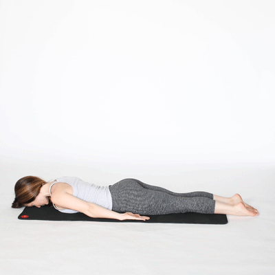
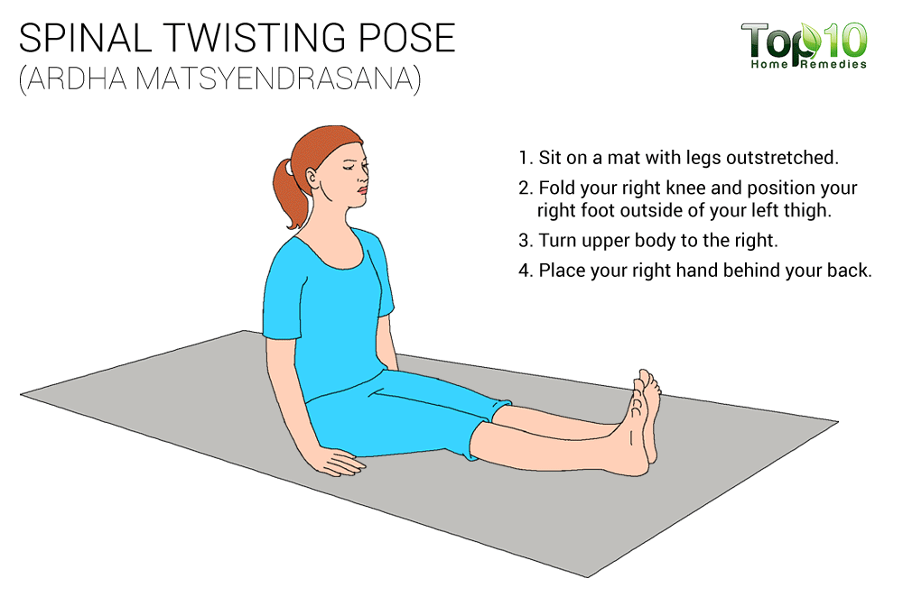
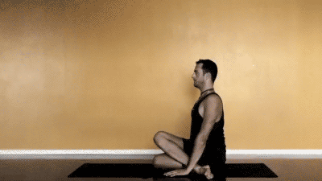
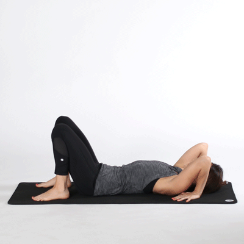

A wave to make india mentally strong and relaxed
Power Mind
Games
Music
Motivation
Yoga
Surya Namaskara
Shalabh Asana
Dhanur Asana
Sarvang Asana
Ard-Matsyendrasana
Gomukhasana
Chakra Asana
Surya Namaskara
Caution:
Since this is an involved yoga sequence, care should be taken if one has general body weakness or muscle and bone weakness.
Someone with a very bad back or injured back should certainly avoid this.
Not advisable to be done by pregnant women as this puts pressure on the back and the abdominal area.
People suffering with high blood pressure and heart related problems should avoid this sequence.
Someone who has severe arthritis leading to knee stiffness, should take it slow or avoid this sequence.
njury at the wrist will make the sequence difficult as pressure on the wrists in poses like Cobra Pose, Adho Mukha Svanasana and going down to Eight Limb Pose would cause more stress and injury to the wrists.

Locust Pose (Salabhasana)
Benifits:
Strengthens Your Core and Back Muscles
Lengthens the Spine and Opens the Chest
Tones Your Butt and Hamstrings
Massages Abdominal Organs and Improves Digestion
Promotes Calmness and Improves Focus
Caution:
Someone with acute back pain or slip disc, they should avoid this pose.
Someone with severe sciatica can bring in more injury here as this pose tightens the entire body from the hip to the feet.
Someone with major problems with menstruation or with a prolapsed uterus should avoid.
Women in their pregnancy should avoid this pose.
If the art of breathing is not learned in this pose , then it could lead to suffocation for someone having Blood Pressure problems, thus should avoid this pose.
Bow pose (Dhanurasana)
Benifits:
Effective in weight loss.
Improves digestion and appetite.
Helps to cure dyspepsia (obesity), rheumatism and gastrointestinal problems.
Cures constipation.
Improves blood circulation.
Gives flexibility to the back.
Strengthens back muscles.
Caution:
As the pose has a strong impact on the abdominal area , women who are pregnant should avoid this.
Patients suffering from pressure, either Low or High should avoid this pose as it brings a lot of pressure to the abdominal area, thus making breathing a little difficult which can stop the flow of blood to the brain.
Any kind of neck injury including someone suffering from spondylitis.
Someone with severe back pain or back injury .
Too much pressure is on the abdominal area as the entire body is balancing, so people suffering from ulcers in stomach or someone with Hernia should avoid this pose.
Sarvangasana
Benifits:
Strengthens shoulders, neck, back, spine and avoid relapse of spondilitis.
Improves digestion and relieves constipation. Proper digestion of food is essential for a healthy living on a daily basis.
Tones legs, hamstrings, and calf muscles. Athletes, specifically runners, will find this yoga pose useful as it reverses the blood flow to the legs. This 'reversed blood flow' helps relieve stress in the leg muscles due to running.
Stimulates the thyroid and parathyroid glands that in turn balances hormones in both males and females.
Improves blood circulation.
The additional flow of blood to the brain helps improve eyesight.
Caution:
Avoid this pose if one is suffering from severe back pain or spine injury.
Avoid this pose if one has spondylitis and/or under medical treatment for the same. But if spondylitis is mild, then this yoga pose can actually help heal the ailment under the guidance of an experienced yoga therapist.
Someone with heart problems, aged, has less flexibility or control on the body may want to avoid this pose or seek guidance from a yoga teacher.
If one has weak internal organs like the spleen, liver or kidney or enlarged thyroid should avoid this yoga pose.
Avoid this pose if someone is suffering from throat infection or ear infection as the flow of blood may bring discomfort to the muscles around the infected area.

Sarvangasana
Benifits:
This yoga pose is a great hip opener and can be part of the practice of hip opener series of yoga poses. This pose flexes the lower part of the body making the hip stronger and toned.
Allowing the spine to twist all the way from the base of the spine to the very top. It tones the spinal nerves and ligaments. Also brings more blood to the spine.
The back muscles, the hips muscles, the leg muscles, and the upper abdominal muscles stretch to the maximum. This stretching improves flexibility and tones the muscles
The back muscles, the hips muscles, the leg muscles, and the upper abdominal muscles stretch to the maximum. This stretching improves flexibility and tones the muscles
Releases excess heat and toxins from organs and tissues.
Caution:
People suffering from severe back or neck pain should practice with caution, and with close supervision.
Those with slip disc problems should avoid this pose completely.
Those with internal organ issues may find this pose difficult and painful.
Should be avoided by pregnant women as it can press the fetus.

Gomukhasana
Benefits
Works for people who have flexibility issues with their backs.
Helps in easing stiff shoulders as well as various backaches and pains.
Diabetes patients have found immense benefits from the Gomukhasana.
Renal activity is stimulated.
The chest muscles become well developed if Gomukhasana is practiced regularly.
Numerous sexual ailments are also alleviated.
Caution
While managing to bring the hands together is an important part of this asana, try not to overdo it on your first go.
In the initial stages, you may find that only the fingers of each hand are managing to touch each other.
People with existing medical conditions, especially back problems, should consult an expert first before practicing the Gomukhasana.

Chakrasana
Benefits
Strengthens liver, pancreas and kidneys.Excellent for heart.
Good for infertility, asthma and osteoporosis.
Strengthens arms, shoulders, hands, wrists and legs.
Stretches the chest and lungs
Strengthens the arms and wrists, legs, buttocks, abdomen, and spine. Stimulates the thyroid and pituitary glands.
Increases energy and counteracts depression.
This asana also gives strength to your legs, abdomen, buttocks, spine, shoulder blades, glutes, hamstrings, lower back, wrists, and arms.
It also relieves stress and reduces depression, and makes you feel energetic and full of life.
Caution
Do not try this Asana in case of back injury.
If you are suffering from heart problems, then don't try this.
Headache, Diarrhea and carpal tunnel syndrome.
High or low blood pressure.
Do not perform this if suffering from any cardiac or spinal problems. Avoid if suffering from hernia.
Play now!
×
Browse..